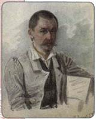
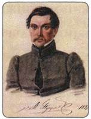
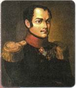
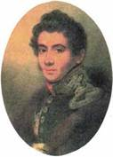
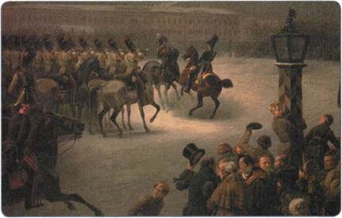
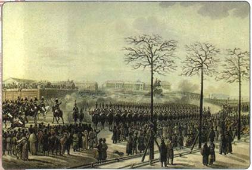
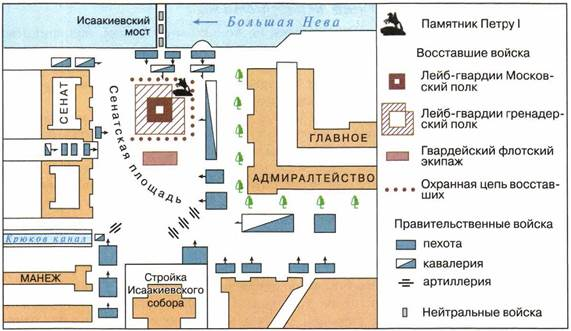

Почему произошло выступление декабристов? Какие последствия для дальнейшей истории России оно имело?
1. Зарождение организованного общественного движения
В царствование Александра I общественное движение впервые приобрело организованные формы. Стали возникать тайные кружки и организации, участниками которых были наиболее образованные, либерально мыслящие представители общества.
Распространение либеральных идей началось в России ещё в XVIII в. при Екатерине II, которая вела переписку с крупнейшими прогрессивными мыслителями того времени (Руссо, Вольтером и др.). Однако в конце своего правления сама же императрица начала гонения на выразителей этих идей, справедливо опасаясь за судьбу монархии в России.
Следующая волна либеральных идей пришла в Россию после Отечественной войны 1812 г. и Заграничных походов русской армии. Тогда тысячи молодых офицеров впервые увидели, что можно жить иначе, чем в России, осознали необходимость перемен. Постепенно складывалось понимание того, что сохранение крепостных порядков сдерживает развитие страны.
Реформаторские проекты первых лет правления Александра I, обсуждавшиеся всеми образованными людьми, а затем и реформы М. М. Сперанского подготовили почву для активного проникновения идей либерализма в сознание передового дворянства.
Однако нерешительность властей в проведении реформ, проявившаяся в послевоенный период, подталкивала тех, кто желал перемен, к созданию тайных обществ и кружков. Не последнюю роль в возникновении таких обществ сыграл опыт участия дворян в масонстве (религиозно-этическом движении тайного характера, проникшем в Россию во второй половине XVIII в.). К началу 1820-х гг. в России членами масонских организаций были более 3 тыс. человек (главным образом дворяне, чиновники).
2. Первые тайные общества
Вскоре после окончания Заграничных походов русской армии образовались первые тайные общества. Их целью была подготовка и осуществление преобразований.
Первым крупным тайным обществом стал «Союз спасения» (1816—1818), имевший по уставу наименование «Общество истинных и верных сынов Отечества». Его основателем был молодой полковник Генерального штаба А. Н. Муравьёв, а членами — С. П. Трубецкой, С. И. и М. И. Муравьёвы-Апостолы, Н. М. Муравьёв, М. С. Лунин, П. И. Пестель, И. И. Пущин и др. (всего 30 человек). Своими целями участники организации считали уничтожение крепостного права и ограничение самодержавия. Они обсуждали пути достижения этих целей, высказывали идеи о возможности военного переворота.

М. С. Лунин

И. И. Пущин
В 1818 г. «Союз спасения» самораспустился, и на его основе возникла более многочисленная организация — «Союз благоденствия» (1818—1821). В нём насчитывалось уже около 200 членов, во главе его были те же лица. «Союз благоденствия» принял устав, получивший название «Зелёная книга». По-прежнему считая необходимым бороться против крепостничества и самодержавия, члены «Союза» более чётко определились в путях достижения этой цели. Уже не стремясь к перевороту, они хотели лишь пропагандировать передовые идеи, заниматься воспитанием и образованием населения с целью распространения либеральных идей. Для этого предполагалось создавать просветительские общества, издавать книги, журналы, открывать школы и т. д. Чтобы в будущем привести страну к благоденствию, члены «Союза благоденствия» считали себя обязанными помогать правительству в проведении реформ.
«Союз благоденствия» распался в 1821 г., когда стало ясно, что правительство Александра I отказалось от реформ. Его члены стали вновь пересматривать свою тактику. На многие мысли наталкивали известия об успешных военных переворотах в ряде стран Западной Европы, произведённых там сторонниками перемен. В 1821—1822 гг. были созданы две новые организации — Южное общество и Северное общество.
3. Южное и Северное тайные общества
Южное тайное общество было образовано в городке Тульчине, где находился штаб расквартированной на Украине армии. Им руководил энергичный полковник П. И. Пестель, бывший участник «Союза спасения», другие два отделения общества находились в городах Каменка и Васильков, во главе их стояли В. Л. Давыдов, С. Г. Волконский, С. И. Муравьёв-Апостол и М. П. Бестужев-Рюмин.
Северное общество было создано в Петербурге. Его основное ядро составили Н. М. Муравьёв, Н. И. Тургенев, М. С. Лунин, С. П. Трубецкой, Е. П. Оболенский и И. И. Пущин.
Оба общества, Южное и Северное, считали необходимым подготовить восстание и захватить власть насильственным путём. Привлечение широких слоёв населения к своим планам они считали ненужным и вредным. Однако по вопросу о том, какие реформы необходимо будет провести после захвата власти, они серьёзно разошлись. Южное общество высказывало более радикальные взгляды и стремилось ликвидировать самодержавие и создать в России республику, Северное общество предлагало монархию сохранить, но ограничить её конституцией.

П. И. Пестель

Н. М. Муравьёв
4. «Русская Правда» П. И. Пестеля
Главным программным документом Южного общества стала написанная Пестелем «Русская Правда», названная так в память о древнерусских законах.
Вспомните, когда и с какой целью была создана «Русская Правда» Ярослава Мудрого.
Это был первый в истории России цельный проект республиканской конституции. Проект предполагал создание в России республики и разделение властей. Законодательная власть должна была принадлежать парламенту — Народному вечу. Исполнительная власть передавалась Державной думе, состоявшей из пяти человек, ежегодно менялся один из членов думы. Эти органы власти, по мысли Пестеля, должны были быть выборными. К выборам в Народное вече он хотел допустить всех мужчин, достигших 20 лет, независимо от имущественного положения и от образования. Державную думу должны были избирать члены Народного веча. Контроль за соблюдением законов должен был осуществлять Верховный собор из 120 человек, избираемых пожизненно.
Сословное деление «Русская Правда» ликвидировала и провозглашала гражданские свободы: слова, печати, передвижений, равенство всех перед законом.
Крепостное право Пестель предлагал отменить. Чтобы обеспечить крестьян достаточным количеством земли, весь земельный фонд страны должен был быть разделён на две равные части — земли общественные и частные. В общественные земли (ими распоряжалась волость) должны были войти бывшие крестьянские наделы, казённые и монастырские земли, а также земли, конфискованные у наиболее крупных помещиков. Общественные земли передавались крестьянам, приписанным к данной волости, в безвозмездное пользование и не подлежали купле-продаже. Земли же частного земельного фонда оставались в рыночном обращении и должны были помогать развитию предпринимательства.
Управлять страной необходимо из единого сильного центра. Россия, по мысли Пестеля, должна стать унитарным государством.
Что касается национальной программы, то Пестель считал, что особого управления на окраинах быть не должно, все народы огромной Российской империи должны жить так же, как вся страна, управляться из единого центра. Все «малые народы» в отношении культуры и быта сблизятся с русскими. Так в будущем все жители страны постепенно сольются в единый русский народ. Исключение Пестель сделал лишь для Польши, которая, получив самостоятельность, должна была, по его мнению, вступить в тесный союз с освободившей её Россией.
5. «Конституция» Н. М. Муравьёва
Главным программным документом Северного тайного общества стала «Конституция», написанная Н. М. Муравьёвым.
Россия должна была, согласно программе Н. М. Муравьёва, стать конституционной монархией. Права императора предполагалось урезать. Он мог возглавлять только исполнительную власть, законодательная власть выводится из его подчинения. Высшая законодательная власть должна была принадлежать парламенту — Народному вечу. Однако право участвовать в выборах получали далеко не все: вводился высокий имущественный ценз. Император, по мысли Муравьёва, должен был стать лишь «верховным чиновником» страны, имеющим право задержать принятие закона и вернуть его на повторное рассмотрение.
«Конституция» Н. М. Муравьёва уничтожала Табель о рангах, а все должности объявляла выборными, вводились гражданские права и свободы: равенство всех граждан перед законом, свобода слова, печати, вероисповеданий.
«Конституция» предусматривала отмену крепостного права, однако большую часть земли оставляла в руках помещиков. Крестьянам предполагалось дать лишь по две десятины земли на душу «для оседлости их» (это фактически вынуждало бы их работать на помещика по найму).
В отличие от Пестеля Муравьёв считал, что унитарным государство быть не должно. Более полезным административным устройством страны он считал федерацию и предлагал образовать на территории России 13 «держав» и 2 области. Федерации предлагалось создать по национальному признаку. Каждая из них имела бы свою столицу (например, Черноморская — в Киеве, Украинская — в Харькове, Кавказская — в Тифлисе и др.). В «державах» законодательная власть должна осуществляться двухпалатными учреждениями — Державной думой (верхняя палата) и Палатой выборных депутатов (нижняя). Исполнительную власть в «державах» должен осуществлять «державный правитель».
Одновременно с Южным и Северным обществами на окраинах страны сложились национальные тайные организации — «Патриотическое общество» в Польше, «Общество соединённых славян» на юге России и др.
«Общество соединённых славян» возглавили братья А. И. и П. И. Борисовы. Главной целью общества стало создание мощной демократической славянской федерации, в которой, кроме России, предполагалось объединить Польшу, Чехию, Венгрию, Трансильванию, Сербию, Молдавию, Валахию, Далмацию и Хорватию (все эти страны члены общества считали славянскими). Федерация должна была простираться вплоть до берегов Чёрного, Белого, Балтийского и Адриатического морей, а четыре якоря в её гербе должны были олицетворять морскую мощь державы. Каждая из стран, входивших в славянскую федерацию, должна была иметь собственную конституцию, учитывающую её национальную специфику. Общим для всех стран федерации были уничтожение крепостного права и демократические свободы граждан.
Среди членов тайных обществ шли споры о способах достижения программных целей. Однако в 1825 г. было принято решение о вооружённом выступлении.
6. Власть и тайные общества
Несмотря на тайный характер организаций, правительство знало многое об их деятельности. В 1822 г. Александр I издал указ о запрете всех тайных обществ и масонских лож. А с 1823 г. началось их преследование. Летом—осенью 1825 г., когда подготовка к выступлению шла полным ходом, Александр I узнал не только о наличии тайных офицерских организаций в армии, но и имена руководителей готовящегося мятежа. За несколько дней до смерти Александр I приказал арестовать ряд участников движения. Уже после смерти царя был отдан приказ об аресте Пестеля, которого осведомители называли главным зачинщиком. Он был арестован 13 декабря, как раз накануне восстания.
7. Династический кризис. Междуцарствие
Осенью 1825 г. во время поездки по стране Александр I внезапно заболел и 19 ноября умер в городе Таганроге.
Какой порядок престолонаследия существовал в Российской империи в начале XIX в.? Кем и почему он был установлен?
У императора сыновей не было, наследником престола по закону считался его брат Константин Павлович. Однако Александр оставил завещание, в котором своим наследником объявлял другого брата, Николая Павловича. Сложность состояла в том, что завещание Александра сохранялось в тайне, как и то, что Константин отказался от своих прав на престол ещё три года назад, женившись на женщине не из правящей династии.
Поэтому, когда 27 ноября 1825 г. весть о смерти императора достигла Петербурга, столица, а затем и вся страна начала присягать императору Константину. Сам он, будучи наместником в Царстве Польском, находился в это время в Варшаве.
Таким образом создалась необычная ситуация: страна присягнула Константину как новому императору, но тот престола не принял и принять не мог, а законный император Николай не имел возможности вступить на престол без официального манифеста Константина об отречении.

Восстание декабристов. Художник В. Тимм
Пока продолжалась переписка между братьями и гонцы скакали из Петербурга в Варшаву и обратно, заминка со вступлением нового императора на престол привела к растерянности в столице, чем и решили воспользоваться члены тайных обществ.
8. Выступление 14 декабря 1825 г.
«Переприсяга» новому императору Николаю I была назначена на 14 декабря. В этот день и решились на выступление члены Северного общества. (С тех пор они, как и все остальные участники тайных организаций 1810— 1820-х гг., стали называться декабристами.) По разработанному ими плану восстание должно было начаться в Петербурге и почти одновременно быть поддержано выступлением 2-й армии на Украине. Диктатором (т. е. военным руководителем) восстания в столице был назначен как старший по званию полковник гвардии С. П. Трубецкой.
Декабристы собирались не допустить присяги солдат Николаю. Они планировали вывести полки, которыми командовали или в которых имели влияние, на Сенатскую площадь под предлогом требования воцарения Константина. В Сенате в это время должна была проходить присяга членов Государственного совета и сенаторов. С помощью оружия восставшие хотели принудить Сенат и Госсовет обнародовать написанный ими «Манифест к русскому народу», объявить об отмене крепостного права и изменить систему управления страной. Одновременно предполагалось арестовать и заключить в Петропавловскую крепость членов царской семьи. Во временное правительство, действующее до выборов в новые органы власти, предполагалось включить известных реформаторов — М. М. Сперанского и Н. С. Мордвинова, которые об этих планах декабристов не имели никакого представления.
Однако в действительности всё получилось совсем не так, как планировалось. Предупреждённый о готовящемся выступлении Николай провёл присягу Сената, Синода и Госсовета ещё ночью. П. Г. Каховский, которому было поручено в случае необходимости убить Николая, отказался это сделать. Диктатор восстания С. П. Трубецкой вовсе не прибыл к войскам, и они оказались без руководства.

Восстание на Сенатской площади 14 декабря 1825 г. Художник К. И. Кольман

Восстание декабристов
14 декабря на Сенатскую площадь декабристам удалось вывести лишь несколько рот (всего свыше 3 тыс. солдат при 30 офицерах). Солдаты не подозревали об истинных целях выступления. Им было сказано, что Николай хочет завладеть престолом вопреки законному наследнику Константину. Солдаты, таким образом, выступали не за отмену крепостного права, а лишь за соблюдение законности при вступлении на престол нового царя. Тем временем остальные войска в столице присягнули Николаю I.
Новый царь предпринял попытку мирным путём свернуть выступление, убедить восставших покинуть Сенатскую площадь. К ним прибыл М. А. Милорадович — популярный среди солдат герой Отечественной войны 1812 г., генерал-губернатор Петербурга. Милорадович попытался доказать рядовым участникам выступления, что их обманывают, однако декабрист Каховский выстрелил в него и смертельно ранил. Переговоры не принесли результата.
После этого Николай, стянувший к площади войска, верные ему и принёсшие ему ранее присягу, приказал открыть огонь по мятежникам. Уже после второго выстрела восставшие дрогнули и побежали. Число жертв составило, по разным данным, от 200 до 300 человек.
После получения известия о разгроме выступления в Петербурге члены Южного общества организовали восстание Черниговского полка на Украине. Руководитель общества Пестель был уже арестован, и восстание возглавил С. И. Муравьёв-Апостол. Оно длилось с 29 декабря 1825 г. по 3 января 1826 г. и также было разгромлено.
9. Следствие и суд над декабристами
К следствию и суду было привлечено несколько сот человек, большинство из которых были военными. Процесс проходил в строгой тайне и в сжатые сроки. Работу следственной комиссии направлял сам император, он лично допрашивал многих арестованных, от которых узнал многое о причинах, побудивших их к восстанию, об их планах реформ.
Осуждённые были разделены на четыре категории (разряда), в зависимости от тяжести приговора. Пятеро декабристов — Пестель, С. И. Муравьёв-Апостол, Бестужев-Рюмин, Каховский и Рылеев — были поставлены «вне разрядов» и приговорены к высшей мере наказания — смертной казни через повешение. 13 июля 1826 г. они были казнены в Петропавловской крепости. Свыше ста декабристов были сосланы на каторгу и на вечное поселение в Сибирь. Многих офицеров разжаловали в солдаты и отправили на Кавказ, где шла война с горцами. Туда же был направлен весь Черниговский полк.
10. Значение и последствия восстания декабристов
Несмотря на разгром выступления декабристов, Николай I оказался под сильным впечатлением от этого события. Опасаясь повторения подобных выступлений, он, с одной стороны, усилил меры противодействия по отношению к возможным заговорам, а с другой — предпринял шаги к осторожному продолжению реформ, которые помогли бы снять напряжённость в обществе.
ПОДВЕДЁМ ИТОГИ
Общественное движение в первой четверти XIX в. под влиянием противоречивой внутренней политики Александра I прошло в своём развитии сложный путь от поддержки реформаторских начинаний власти к вынашиванию планов её насильственного свержения.
Выступление декабристов и следствие по их делу показали наличие глубоких противоречий в обществе, порождённых феодально-крепостнической системой. Разрешить их можно было только путём реформ. Декабристы всколыхнули передовую часть российского общества, способствовали тому, что многие осознали необходимость реформ в области управления страной и решения крестьянского вопроса.
Вопросы и задания для работы с текстом параграфа
1. Объясните суть понятия «общественное движение». 2. Какие слои общества составляли в России в первой четверти XIX в. основу общественного движения? 3. Как повлияла Отечественная война и Заграничные походы на общественные настроения? 4. Чем отличалась тактика, выбранная членами «Союза спасения», от тактики «Союза благоденствия»? 5. В чём состояла главная причина династического кризиса 1825 г.? 6. Почему декабристы не сообщали выведенным ими на Сенатскую площадь солдатам об истинных причинах выступления? 7. Сформулируйте значение выступления декабристов. 8. Как власти расправились с участниками выступления декабристов?
Работаем с картой
1. Опираясь на карту-схему, расскажите о событиях, произошедших 14 декабря 1825 г. на Сенатской площади.
2. Покажите на карте России XIX в. территорию, где произошло восстание Черниговского полка.
Думаем, сравниваем, размышляем
1. Программу какого из тайных обществ («Союз спасения», «Союз благоденствия», Южное общество, Северное общество) вы можете назвать наиболее радикальной? Поясните свой выбор. 2. Опираясь на текст параграфа, сравните «Русскую Правду» П. И. Пестеля и «Конституцию» Н. М. Муравьёва по самостоятельно отобранным критериям. 3. Подготовьтесь к дискуссии на тему «Были ли у декабристов шансы взять власть в свои руки и реализовать планы переустройства России?». Обоснуйте свою позицию. 4. Выясните, кто из жён декабристов последовал вслед за мужьями к месту каторги и ссылки. Какими нравственными и духовными принципами они руководствовались? 5. Составьте (в тетради) список художественных произведений, посвящённых теме восстания декабристов. 6. «Над ними нет ни камня, ни креста, могила их — весь остров Декабристов», — написал современный поэт А. М. Городницкий. Выясните, как происходили поиски захоронения пяти казнённых декабристов, определите, в каком из районов Петербурга расположено наиболее вероятное место этого захоронения.
Запоминаем новые слова
Автономия — самоуправление, право самостоятельного решения внутренних вопросов какой-либо частью государства или отдельным учреждением.
Амнистия — частичное или полное освобождение от судебного наказания, осуществляемое верховной властью.
Идеолог — выразитель и защитник идеологии — совокупности взглядов, идей, в которых отражается отношение людей к существующей действительности.
Инстанция — ступень в системе подчинённых друг другу органов.
Консерватизм — течение, сторонники которого отстаивают идеи сохранения традиций, преемственности в политической и культурной жизни.
Либерализм — философское и общественно-политическое течение, объединяющее сторонников парламентского строя, гражданских свобод (выбора веры, свободы слова, собраний, объединений и т. д.) и свободы предпринимательства, отстаивающее приоритет прав человека и ограничение вмешательства государства во все сферы жизнедеятельности общества и личности.
Манёвр — передвижение войск на театре военных действий.
Манифест — торжественное письменное обращение верховной власти к населению.
Ополчение — войско, создаваемое в помощь регулярной армии на добровольных началах.
Сейм — название законодательного органа власти в ряде стран. В начале XIX в. депутаты в сеймы избирались от сословий, а права их были ограниченными.
Устав — свод правил, определяющий устройство, порядок деятельности организации или государственного органа.
Флеши — земляные укрепления.
Ценз — условие, ограничивающее для человека возможности осуществления тех или иных прав, в частности избирательных прав.
Цензура — просмотр произведений, предназначенных для печати, постановки, а иногда и частных писем с целью контроля.
Экономический кризис — тяжёлая ситуация в развитии экономики, время её упадка; невозможность экономической системы успешно функционировать в старых формах.
ПОВТОРЯЕМ И ДЕЛАЕМ ВЫВОДЫ
1. Сравните экономическое развитие России и стран Западной Европы в первой четверти XIX в., сделайте выводы.
2. Какие цели преследовал М. М. Сперанский, готовя проект реформ? Проанализируйте «План государственного преобразования» М. М. Сперанского.
3. Назовите причины и итоги Отечественной войны 1812 г. Кратко охарактеризуйте основные этапы войны.
4. Охарактеризуйте положение России в мире после Венского конгресса.
5. Назовите основные направления во внешней политике России в период правления Александра I. Каких результатов удалось достичь на каждом из направлений?
6. Проанализируйте развитие общественного движения в России в первой четверти XIX в., перечислите тайные организации, охарактеризуйте их цели и программы.